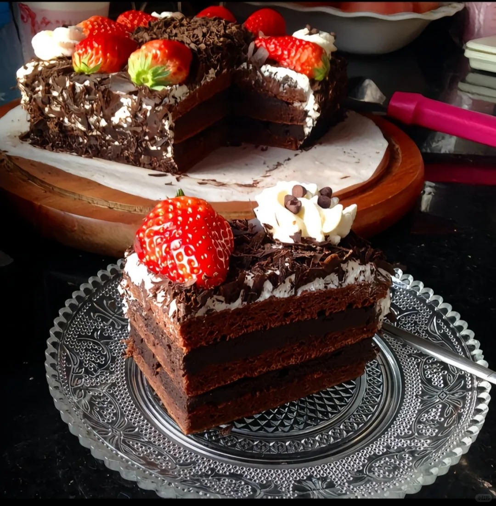
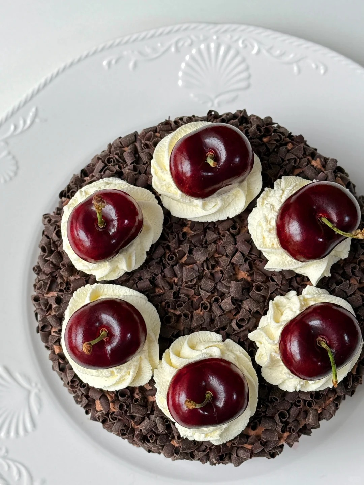
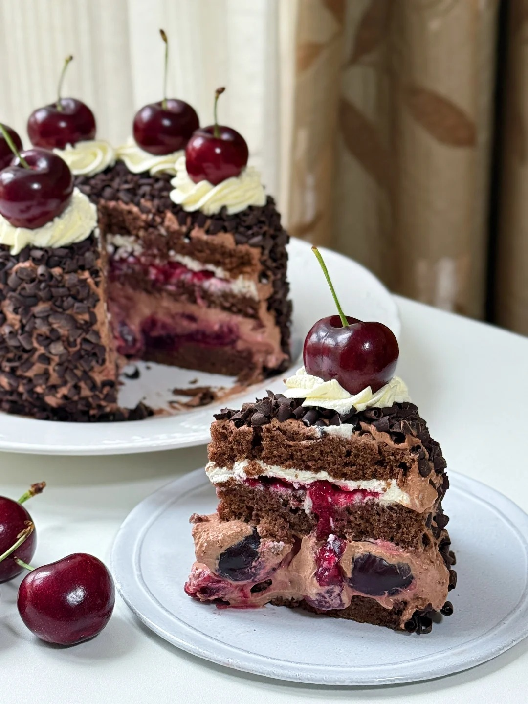

黑森林蛋糕



黑森林蛋糕（Schwarzwälder Kirschtorte），又名 “黑森林樱桃蛋糕”，是一种著名的德国甜点。黑森林蛋糕融合了樱桃的酸、奶油的甜、巧克力的苦、樱桃酒的醇香，口感丰富，层次分明，每一口都能带给味蕾独特的体验。制作流程通常先制作香草海绵蛋糕和巧克力海绵蛋糕作为胚子，将鸡蛋、糖搅打至泛白呈厚乳沫状，拌入面粉和溶化白脱油，倒入烤盘烤至金黄色。然后将巧克力融化切碎，冷却后刮成巧克力屑。最后将蛋糕胚切片，在饼干底上刷果胶，依次叠加蛋糕胚，在奶油中加入糖粉打出奶油泡，在蛋糕胚外围和中间涂上奶油和樱桃酱，再用巧克力屑包裹蛋糕，用樱桃点缀。 黑森林蛋糕发源于德国南部的黑森林地区。其起源是樱桃丰收季节，当地农妇会在蛋糕层之间塞满樱桃，或装饰在蛋糕表面，还会在鲜奶油和蛋糕面糊中加入樱桃汁和樱桃酒，这种蛋糕逐渐演变成了黑森林蛋糕。
制作方法：